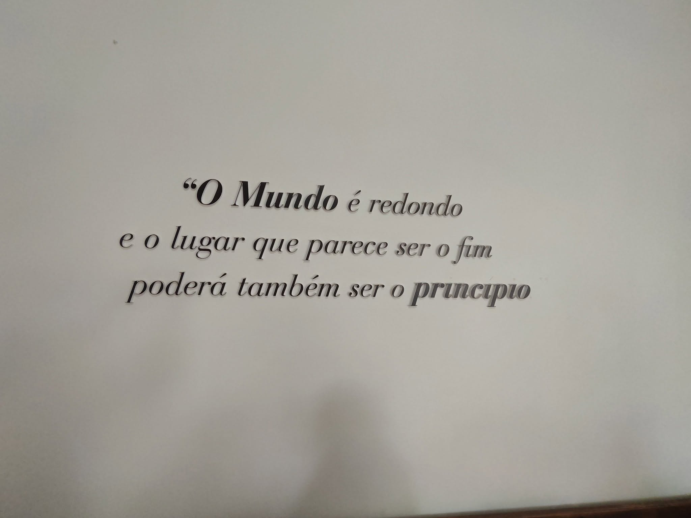
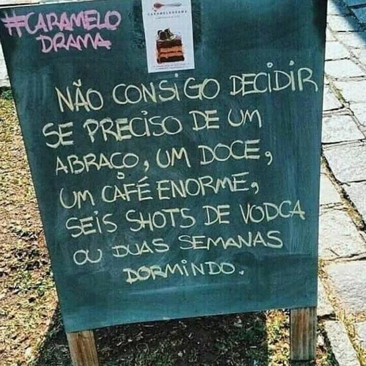

Chama-se Luis Filipe Calisto dos Santos Curado, nasceu em Alhos Vedros em 1979, é filho de Maria Fernanda Farrim, uma famosa cantora na altura que chegou a ir ao Festival da canção em 1974, com uma canção chamada “Cantiga ao Vento”
(Maria Fernanda Farrim)
A mãe do autor é Maria Fernanda Farrim, uma cantora famosa na altura que participou no Festival da Canção em 1974. Aquando da separação dos pais, o autor (com apenas 4-5 anos) foi deixado na casa da avó paterna com sacos de roupa, um evento profundamente traumatizante. O seu irmão mais velho ficou com os avós maternos. O autor tem muito poucas lembranças da mãe e cresceu com o sentimento desse abandono, atenuado apenas pelo amor e carinho da avó paterna. Mais tarde na juventude, a mãe continuou a ser uma figura totalmente ausente ("não me ligava quase nada, ou mesmo nada"). A Infância e a Violência Paterna Viveu com a avó Luiza até aos 7 anos, num ambiente rural e livre. Após o pai sair da prisão, foi forçado a mudar-se para Palmela para viver com ele e a madrasta (Palmira). A convivência com o pai foi marcada por regras rígidas, agressividade e violência física extrema. O autor chegou a ser internado no Hospital de Palmela devido às agressões do pai. O ambiente familiar era muito instável, culminando na segunda prisão do pai.
Nascida a 1 de abril de 1948, no Montijo, onde permaneceu até aos 11 anos de idade. Desde muito nova que começou a cantar, tendo participado em muitos espetáculos escolares. Na adolescência foi ainda Miss Cova da Piedade, aos 16 anos. Depois foi viver com a avó para Lisboa, onde esteve mais seis anos, até que decidiu ir para Madrid, para se profissionalizar como cantora, tendo atuado durante três meses em vários clubes noturnos da capital espanhola. Seguiu depois para Luanda e mais tarde para Lourenço Marques, onde trabalhou durante três anos, atuando em espetáculos, em bares e discotecas e na rádio. Voltou para Portugal em novembro de 1973, a fim de gravar o seu primeiro disco, editado no ano seguinte com os temas Passo a Passo, Tão Longe e O Mundo Precisa de Amor. Participou no Festival da Canção 1974, com o tema Cantiga Ao Vento, de Fernando Vieira e Fernando Potier, tendo a sua voz grave e melodiosa cativado a audiência. Classificou-se em último lugar sem qualquer voto do júri distrital ou de seleção. Editou ainda mais um single composto por esta canção e o tema Serrana, Livre Serrana. Atuou em vários palcos durante a década de 70 e 80, tendo-se depois retirado. Fernanda Farri já faleceu.
Abandonou a escola no 7º ano e começou a trabalhar cedo: carpintaria, fábrica de candeeiros, e como afagador de pedra em Lisboa (onde começou a ganhar bem). Trabalhou como ajudante de eletricista, uma profissão de que gostava muito e que lhe dava estabilidade financeira. Conseguiu o trabalho que sonhava na Nissan Entreposto, como ajudante de pintor automóvel, onde se estava a preparar para ser pintor efetivo.
No dia 11 de Julho de 1998, durante uma ida à praia da Figueirinha com amigos, sofreu um trágico acidente. Ao mergulhar de uma rocha, bateu no fundo e perdeu imediatamente a capacidade de se mexer. O acidente resultou numa Lesão Medular Cervical grave nívelC4−C5. Hospitalização e Impacto Psicológico Passou por um longo e doloroso processo médico nos hospitais de São Bernardo, São José (onde foi operado, sofreu crises respiratórias e esteve nos cuidados intensivos um mês) e Outão. O trauma psicológico foi brutal: lidou com o abandono da namorada, o choque de amigos ao verem o seu estado, depressão severa e dependência de medicação psiquiátrica.
Deu entrada no Centro de Medicina de Reabilitação de Alcoitão, onde enfrentou a dura realidade de que a sua lesão era completa e as melhorias físicas seriam mínimas ou nulas. Apercebeu-se de que a sua vida ativa tinha acabado e que iria depender de outras pessoas para todas as necessidades básicas da vida diária (alimentação, higiene, vestir). No final do relato, com a alta marcada para janeiro de 2000, o autor expressa um medo profundo e desesperante em relação ao futuro, pois iria voltar a viver com o pai (uma pessoa em quem nem ele nem a assistente social confiavam plenamente) e enfrentaria uma vida de total dependência.
(Janeiro de 2000) A saída de Alcoitão foi marcada por um misto de sentimentos complexos, incluindo o receio de enfrentar uma nova realidade de dependência física e um ambiente familiar instável. No entanto, a verdadeira história que se seguiu foi a de uma recusa em ficar estagnado. Em vez de se conformar com as limitações da lesão medular cervical (C4-C5), o Luís procurou caminhos para reconstruir a sua autonomia através da mente e do conhecimento.
O Recomeço Após a Alta e os 15 Anos de Isolamento (Janeiro de 2000)A saída do Centro de Medicina de Reabilitação de Alcoitão foi o início de uma etapa extremamente difícil. Para além do medo do futuro e da dependência física, o Luís enfrentou uma dura e dolorosa realidade: infelizmente, acabou por ficar praticamente fechado em casa durante 15 longos anos. Sem os apoios certos, sem acessibilidades e com o mundo exterior a parecer distante, este foi um período de enorme solidão, onde o tempo parecia estagnado e as perspetivas de futuro eram quase nenhumas.
Apesar do peso desse isolamento prolongado, a força interior do Luís não se apagou. A verdadeira reviravolta começou quando decidiu que a sua mente não podia continuar confinada. O regresso aos livros foi o rastilho para a liberdade: superou as dificuldades iniciais e concluiu com sucesso o 9º ano, provando a si próprio que era capaz de reescrever o seu destino.
Com o percurso profissional anterior interrompido abruptamente pelo acidente de 1998, a educação tornou-se a chave para o futuro. O regresso aos estudos começou com a superação e conclusão do 9º ano, um passo essencial que lhe devolveu a confiança e preparou o terreno para voos mais altos. A Conquista do 12º Ano em Técnico de Multimédia A grande viragem aconteceu ao ingressar no curso de Técnico de Multimédia no IEFP. O computador passou a ser a sua nova ferramenta de trabalho e liberdade. Ao dominar áreas como o design gráfico, o desenvolvimento web e a edição de imagem e vídeo, provou que a criatividade não tem barreiras físicas. Esta etapa culminou com o sucesso do seu diploma do 12º ano, transformando-o num criador de conteúdos digitais qualificado. A Especialização Avançada e a Certificação Cisco Demonstrando uma ambição contínua, o Luís avançou para o nível pós-secundário como Técnico Especialista em Aplicações de Informática de Gestão. Este percurso exigente focou-se em sistemas de informação complexos e redes de computadores, coroado com a obtenção do prestigiado diploma internacional da Cisco Networking Academy. Hoje, em 2026, este percurso desenvolvido no IEFP em Alcoitão reflete um exemplo inspirador de resiliência: a transformação de um cenário de total incerteza numa carreira tecnológica sólida e cheia de competências reais.


© 2026 - Trabalho Realizado por - Luis Filipe Curado - IEFP - Alcoitão